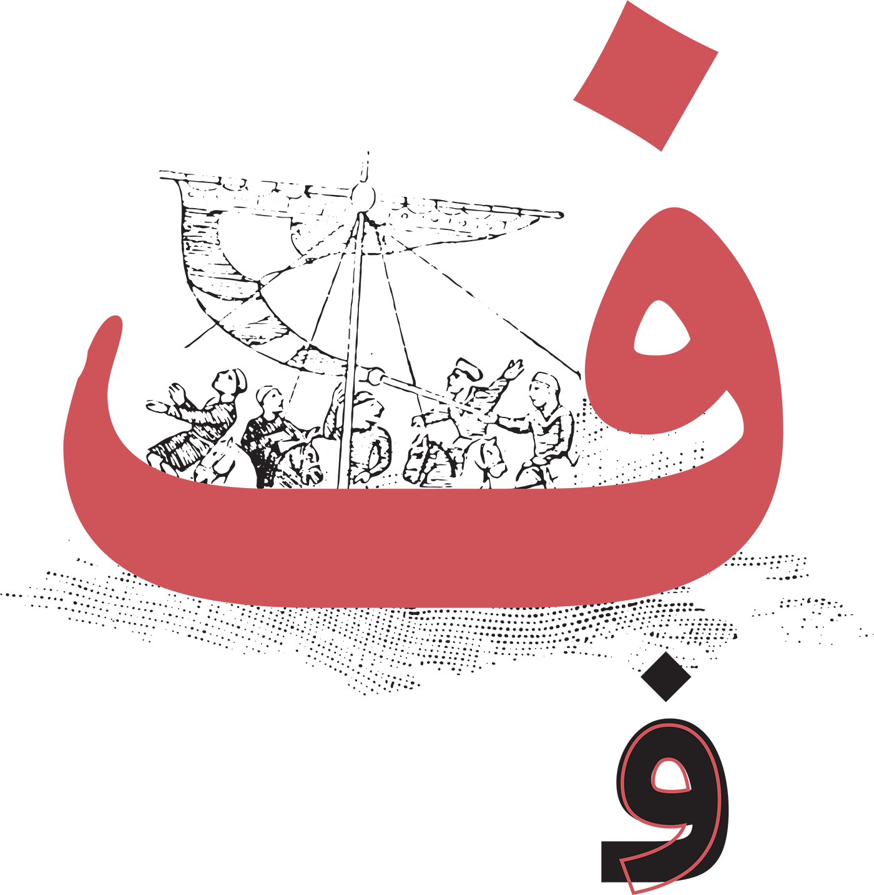
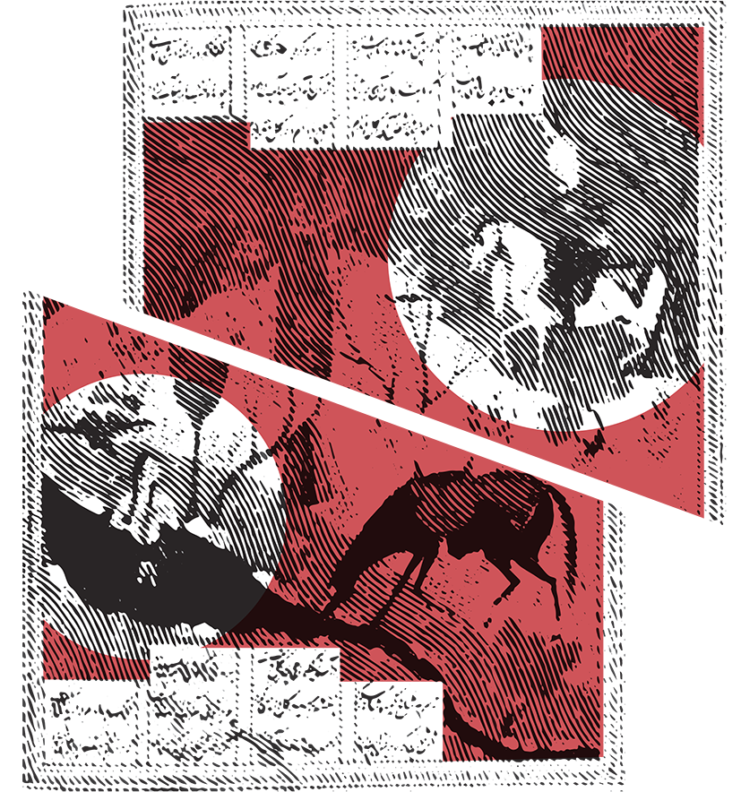
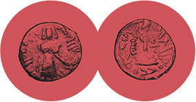

The Arabic Alphabet: A Guided Tour
by Michael Beard
illustrated by Houman Mortazavi

The Control F Word
Fâ is one of the easy ones: a little circle drawn clockwise, resting, or balancing, on the base line, slightly pointed at the bottom. There is a dot above the circle. (In Morocco you may find the dot underneath.) That’s what you’ll see in the middle of a word. The minimal shape, circle plus dot, gets a little showier at the end or the beginning. At the beginning, raised above the base line, it looks as if the circle were lifted up on a stick, balloon style (فـ). At the end of the word, the line continues on to the left (ف), and forms something like that familiar shallow pan shape one sees in a terminal Ba, Ta, or Tha.
As for the sound, it’s also easy— for us at least. I’m told there are quite a few languages that don’t have it. Old Persian was one. (F words came into Persian gradually — via loans from, I am told, Elamite and Median-- which gradually got accepted as one of the family.) Phoenician didn’t have an F either, but it had a P which over time took on an F sound.
The neighborly relation between P and F is pretty well known (i.e. that speakers of Arabic have F, but not the P sound). Thus the complication of loan words from Persian into Arabic: famously, if the word has a P in Persian, it becomes either B or F in Arabic. Often enough those words got reborrowed into Persian again, F words keeping the F. Textbook examples: Persian pîl, elephant, became Arabic fîl, and kept the F when it crossed back into Persian. More famously, Persian Pars became Arabic Fars; Persian Ispahân became Persian Esfahân. Old Persian pairidaeza (a term you would see in the Avesta), garden or for paradise, drifted west to Greek and Latin (and English – our “paradise”), keeping the P sound. (In the Septuagint translation of the Bible, the Greek equivalent, παράδεισος, is used as the name of the Garden of Eden.) As an Arabic loan word, it became al-firdus ,الفردوس, a Qur’ânic word usually translated “paradise.”
V vs W
In Arabic, ف can have a meaning on its own. A simple ف is the word fa-. It attaches to the next word and works as a grammatical connective. The dictionary says “then, thus, and so, however, because, therefore.” It’s a universal joint of Arabic syntax. Sometimes it seems as common as “and.” It may feel something like English “so.” (Sometimes it’s “so” in that contemporary English use which means “a statement follows.”) I always assumed that this use of the word ف had something to do with the letter which resembles it, و, Waw, which has a similar meaning when it stands alone, wa, meaning “and.” I have it on good authority that this similarity of meanings between ف and و , F and W, is a coincidence.
But if we want to find a relationship between F and V, in Arabic, there is a visual one. It results from the absence of V sound from Arabic: loan words with a V sometimes get their own letter. Many years ago, in a store in the Kerman bazaar, I saw a container with the label اُڤالتین (Ouvâltîn). It was pretty clearly an Ovaltine container, and that ڤ with three dots was clearly there to represent a V (a voiced F). You knew from those three dots that it wasn’t a domestic product, Persian having no trouble with the V sound (their و), so that, in Persian, ڤ isn’t of any particular use. The three-dot ڤ – I found out later-- is rare in Arabic too. (The only other example I’ve seen is ڤيتنام for Vietnam) but it shows up regularly to represent a V sound in Sorani Kurdish and Swahili. You can see the logic of the shape: ڤ is another case where the triple dots are devised to thicken the sound of another letter (as with ت to ث --T to TH-- or س to ش -- S to SH). There is variant of ڤ, written ڥ , which plays the same role of representing the V sound in Tunisia and Algeria, though for some reason it doesn’t look as thick. (This is probably just me.) Today Arabic containers of Ovaltine simply write اُفالتین with a Fa, no doubt on the assumption that customers are likely to know English and understand it on their own. Three dots no longer useful, casualties of education.
In Spanish, fulano means something like “so-and-so,” “someone or other,” as in “Fulano, Mengano, Zutano y Perengano,” which I think means something like “Tom Dick and Harry.” The origin is the Arabic word fulân, فلان (falan in Turkish, folân in Persian), where it has the same range of meanings – from an innocent “some random person,” to something more pointed, “that so-and-so," or even “that bastard.” There is a fragment of a lost poem by the 8th-century Arab satirist Jarîrî, literary insult comic, directed at someone who is too much of a nobody to name.
وَقُلْ لِفُلَانٍ إِنْ تَجَرَّأَ مَرَّةً
سَتَعْرِفُ مَنْ يَبْقَى وَمَنْ يَتَحَوَّلُ
[Tell that nobody (that fulân ) if he tries it again (“it” not specified),
he’ll learn who holds his ground and who runs away.]
The ف Word
There are a lot of notable individuals whose names begin with ف. Al-Fârâbî – Alpharabius in Latin, whose philosophy included a notion of a unified single consciousness, which Aquinas cites, in Summa contra Gentiles II, chapter 73 -- disagreeing with it. (It’s odd to see his name in the middle of a Latin sentence in a book of Christian theology: “Et hoc est quod dicit Alpharabius, quod intellectus possibilis est unus in omnibus hominibus.”)

There is the 11th century epic poet Abu al-Qâsem Ferdowsi, “the heavenly one,” author of the great epic poem the Shâhnâmeh, whose pen-name has a pretty recognizable stem.
There is Farîd ad-Dîn, or Farîd ad-Dîn ‘Aṭṭâr (‘Aṭṭâr, “The Perfumer,” being his pen-name), famous for “The Conference of the Birds” (Manṭaq al-Ṭayr), well known to us because of Dick Davis’s intelligent and justly popular translation. فرید, Farîd, is “unique,” “peerless.”
There’s Farhad, the architect in the pre-Islamic story of Khosrow and Shirin (poets loved to retell it). Farhad is known for his love of Shirin, and for a tunnel through a mountain which he has designed. (It ends badly for Farhad, and perhaps for the tunnel – the story doesn’t say.) A variant of his name (if we read it as a 4-consonant Arabic form), Al-Farâhîdî (718-86) was the name of the grammarian (no doubt of Persian background) who wrote the first dictionary of Arabic, “The Book of ‘Ayn.” It was called “The Book of ‘Ayn” because he used a scientific sequence for the letters, from the back of the throat to the labials up front. ع , ‘Ayn, is the starting point since it comes from furthest back. The first three letters of his sequence, their A-B-C equivalent, is ع- ح- ه , ‘Ayn-Ḥa-Ha. Fa shows up near the end, at the front of the mouth, between the sounds of N and B.
There is an Arab grammarian, ‘Amr ibn ‘Usmân, known as Sîbawayh -- c. 760–796), who elevated a Fa word, فَعَلَ , fa‘ala, to be a fundamental role, measure word for most of the language.
فَعَلَ , fa‘ala, is the basic verb for doing, performing, acting (something like Persian kardan, Turkish etmek, Urdu karnâ), a logical choice for the default verb, the one used to represent all the others when you want to talk about their form. “Every word,” he writes,
...is composed of consonants and vowels . The consonants are the root, and the vowels are the pattern. To demonstrate, we say faʿala. The Fâʾ is the first consonant, the ʿAyn the second, and the Lâm the third. Upon this model, all triliteral roots are measured” (Al-Kitâb, I.1, trans. Michael George Carter in “The Makers of Islamic Civilization” series. London: I.B. Tauris, 2012).
It’s a simple suggestion, described with minimal jargon, and it caught on. It has become one of the first things a student learns studying Arabic. You start withthe stem فَعَلَ, F-‘-L (forget the meaning). It doesn’t control the others: we just use it as the shell to demonstrate standard shapes of the 3-consonant forms, which expand in predictable shapes like crystals. Most of us have seen it before. The form of the active participle, for example, is فاعِل, fâ‘il; passive participle, مفعول, maf‘ûl. The comparative is أفعَل af‘al. Thus, to add examples of the type students learn in the first few weeks of an Arabic class, the verb for understanding, F-H-M. فَِهِمَ “he understood”: with a T prefix it’s تفهّم, tafahhum, instruction. فَهْم , fahm, is “comprehension”; فاهِم, fâhim is the active participle, as in Ana fâhim, “I understand“; فهِّم, fahhima with a double H is the causative, “to instruct, to make someone else understand.” مفهوم, mafhûm is “understood,” “comprehensible.” “Got it.”
So when you look up a word in an Arabic dictionary, you look up the three consonants of the stem. You’re not necessarily looking up the word you saw on the page, or the billboard, the store window, or the frieze over an archway. Just those three consonants. (There are exceptions. Forget them for a while.)
Persian or Urdu dictionaries don’t do this (and no doubt a lot of other languages). They scatter the three-consonant roots, and the sequence is reduced to one we’re familiar with in English, arranged by whatever letter (with whatever prefix) finds itself at the beginning of the word, with the result that the Arabic loan words which begin with the most common prefixes, Mim and Tâ’ words, swell out those letter sections of the dictionary (faṣl-e Mim, faṣl-e Ta) considerably. The result is a lot of T words & even more M words in loans that aren’t T or M words in Arabic.
Sîbawayh’s system, by the way, won’t help us understand his name. “Sîbawayh” derives from the Persian word سیب, sîb, an apple. Sibuyeh in Persian (سیبویه) is the fragrance of an apple. The same word Arabized is سِيبَوَيْه, easy to spot as a loan word.
Three-consonant stems are pretty common in other Semitic languages, Phoenician, Akkadian and proto-Semitic included. The equivalent system in Hebrew, which dates from 10th and 11th -century grammarians familiar with Arabic, uses a فعل cognate, the verb P-‘-L, פָּעַל (P, as so often, being the counterpart of F). A verb is a po‘al (פּוֹעַל, accent on the po); a worker is a po‘el , פְּעוּלָה (accent on the -‘el). An action is a pe‘ula , פְּעוּלָה (accent on the -la); a factory is a mip‘al , מִפְעָל (accent on the ‘al).
There are people who feel there is a kind of mystique in the process when you contemplate those geometrical structures which shape what one says, spontaneously, whether we are aware of it or not. It’s the mystique of gaining access to the linguistic motor, looking under the hood, glimpsing the structure of the language, a search that goes on independent of time -- i.e. a synchronic search, to be technical -- a search for information that’s all there simultaneously, at a single moment in linguistic history.
And there are people who feel a comparable mystique searching out word origins in English -- the ones you see listed at the end of the dictionary entry, e.g.:
Consonant . . . from the present participle of consonare, to sound at the same time, to harmonize. Com- together + sonare, to sound [see swen- in Appendix.]”;
“Vowel . . . from Latin vocalis [see wekw in Appendix])
Word origins send you back in time. You peer into the past and trace a history that evolved, unintended, in the sounds pronounced by generations of speakers, following rules of change like Grimm’s law, Verner’s law, the great vowel shift, etc., changes which no individual speaker plans to make -- diachronic, you might say, to be technical. It’s one way of tracing words back to a realm outside of what they mean. (And it’s a branch of human history which leaves out the usual bloodshed.)
In either case, both exercises sift through chaos, the seemingly random experiences of language, and provide a way to organize it. Even something so simple as a concordance, listing word frequency, shows which words are doing the most work, or which words sketch a writer’s style. (The famous example is the novelist in David Lodge’s Nice Work, who learns from a concordance that his novels are dominated by the word “greasy” and gives up writing.)
A fa’l, فأل, a good omen, sounds as if it might come from fa‘ala, فعل, but seeing it written, in Arabic script more clearly than in transcription, you see that the middle consonant isn’t ‘Ayn but the ubiquitous glottal stop called Hamza (for us, an apostrophe rounded to the right). The stem is F-’-L. Not F-‘-L.
The opposite of a fa’l is a shu’m, a bad omen (stem: Sh-’-L, also with Hamza in the middle). A mutashâ’im is a pessimist. A mutafâ’il is an optimist. The hero of Émile Habiby’s 1974 satire about the sad history of Palestine (“The Curious case of Sa‘îd . . .” (Al-Waqâʾiʿ al-gharîbah fî-khtifâʾ Saʿîd Abî 'l-Naḥsh al-Mutashâʾil), is a mutashâ’il, a متشائل, a composite of the two (متفائل + متشائم), scrambling fa’l and a shu’m, thus creating a word not yet in dictionaries. In its English translation he is a pessoptimist (The Secret Life of Saeed the Pessoptimist). It’s one of those happy occasions where an English translation can catch the nuance.
فأل, fa’l, enters Persian as فال, fâl, without the Hamza (pronounced “fall” with a broad A). Translations say “omen,” “augury,” or “fortune telling.” I have heard it used only as fâl-e Ḥâfez, where you open a collection of Hafez’s poetry and drop your finger on the page without looking. Hafez isn’t just a respected poet; he’s a prophet. I’ve actually had some pretty good advice that way.
Four
There are words in Arabic which don’t fit the standard فعل paradigm, for instance stems with four consonants rather than three, which follow their own pattern, like فَخْفَخَ fakhfakha (to boast) or فَرْفَرَ, farfara (to shake oneself or shudder, like a bird in a puddle). Sometimes you need four consonants because it’s molded on a four-consonant word that has been borrowed.
Greek πανδοχεîον, pandokheîon, a hotel, becomes in Arabic فَنْدَق funduq (which in turn becomes Italian fondaco and Spanish fonda). فَلْسَفَ , falsafa (F-L-S-F), is to philosophize, a stem we hear more often in its nouns – faylasûf (a philosopher) and falsâfa (philosophy). فلفل falfala (F-L-F-L to add pepper), noun form filfil, is a loan word from Sanskrit pippalî, source of, needless to say, English “pepper.” Arabic Firdûs . . . the loan word, a noun, borrowed from Persian, developed a 4-consonant verbal form, فَرْدَسَ , fardasa (F-R-D-S), “to place someone in a garden,” which no one uses. (You’ll find it in venerable old dictionaries, like Lane’s Lexicon.)
Fahrasa, فَهْرَسَ (F-H-R-S) is to compile an index. A فِهْرِس, fihris, is an index, catalogue or table of contents, or just a list. It comes from another Persian noun, فهرست , fehrest with a T. The word has an importance in Arabic because we still have a famous list in Arabic simply referred to as The Fihrist, a catalogue of books, evidently for sale at the family bookstore, compiled by a 10th-century bibliographer, or warrâq, a seller of manuscripts named Muhammad ibn Ishâq al-Nadîm Ibn al-Nadîm. The fehrest is like a glimpse into a moment in history, a portrait of the intellectual world of Baghdad which makes you wonder what the store looked like and whether you could browse. More likely, browsing meant looking through the catalogue, which is enormous, 1252 pages in a recent translation (by Bayard Dodge, 1998) A four-volume Arabic edition weighs 8.96 pounds. A fihris can be a simple list, often specifically a list of books, or a list of items inside a book. Today you are likely to see the word at the end of a book, at the spot where we might write “index” or possibly “table of contents.” A difficult book can become more accessible if you have a mu‘jam mufahras مُعْجَم مُفَهْرَس or a fihris abjadi, فِهْرِس أَبْجَدِيّ , a concordance, with which one can lay the book’s component parts side by side.
Two
There is also a little cache of words with only two consonants: دم, dam (blood), ید , yad (hand), أَب , ’ab (father). It is said that such words tend to be terms for basic things, with the most fundamental meanings and very likely the oldest roots. (I’m told that older Semitic languages had a bigger stock of them.)
One of them is the Fa word فم fum, “mouth.” It seems reasonable that the mouth should be up there with blood and hand as fundamental parts of the body. Or of the sky. There is more than one mouth up there: Fum al-asad, the lion’s mouth in Leo, Fum al-samaka, mouth of the fish in Pisces, and Fum al-faras, the horse’s mouth in Pegasus. Fum al-asad, the lion’s mouth, is in the constellation Cancer. The name tells us that Arab astronomers visualized Leo's head extending further to the west than we do. The fum English speakers know best is fum al- h͎ût, mouth of the fish, Fomalhaut, in the constellation Pisces Australis, the southern fish. As constellations go, Pisces Australis isn’t much to see, and to viewers in the northern hemisphere it never gets very far over the horizon. It seems an afterthought, a shape which ended up with a fish name simply because it’s located in what is often called the watery part of the sky (with Eridanus, Cetus the whale and Aquarius). Fomalhaut is the brightest star in the area, the one with the most interesting name, trapped in an uninteresting constellation.
Hafez has a taste for shifts of scale. You can see it in the poem (the same poem that includes the gham-patrol) which begins:
بیا تا گل بر افشانیم و می در ساغر اندازیم
Biyâ tâ gol bar-afshânim o mei dar sâgher andâzim.[Let’s scatter roses and pour wine into the cup...
Or, more poetically, “Come, so that we can scatter flowers/and fill the glass with wine . . .”—trans. Dick Davis]
It’s a pretty standard opening – the predictable advice which counsels the reader to have some fun. The next half of the couplet escalates:
فلک را سقف بشکافیم و طرحی نو در اندازیم
Falak-râ saqf beshkâfim-o ṭarḥî now dar andâzim.[As for the sky (falak), let’s break that ceiling and start a whole new order (ṭarḥ).
Or “. . . and split the ceiling of the skies/and try a new design”
– Davis]
We have big plans like this in English poetry (Edna St. Vincent Millay’s “The soul can split the sky in two,/ And let the face of God shine through” or “I’m standing next to a mountain – chop it down with the edge of my hand”), but in contexts which don’t surprise us as much. In Hafez the outrageous moment comes out of nowhere. The word for “sky,” the F word falak , فلک, becomes a kind of ceiling (or has above it a kind of ceiling?) and a ṭarḥ is a plan, a design, a foundation. It sounds as if he doesn’t just want to start a new society, which would be ambitious enough. He wants to start the universe over. (There is an architects’ studio in Iran with the name Ṭarḥ-e ٔnow, about whom I know nothing, but reading Hafez you expect big things from them.)
فلک comes from the Arabic stem F-L-K. Its meanings convey roundness (spheres, orbits, circuits, the zodiac, also anatomical roundness, e.g. a breast). A beautiful Qur’ânic passage, in Sura Yâ-Sîn, centers on the falak. It is part of a list of signs of divine power, specific creations in the natural world: orchards, animals in pairs, night and day, the sun running her course, and the moon with his changes from glorious to worn out (like the frond of a date tree). The sun’s track and the moon’s, furthermore, follow their own paths separately, as the night and day are separate – “wa kullun fi falakin yasbah͎ûna” (وَكُلٌّ فِي فَلَكٍ يَسْبَحُونَ --36.40), each of them, sun and moon, floating along in the falak. The verb translated “floating” is yasbah͎ûna, to swim, to float, to spread out. (The stem S-B-Ḥ also means to praise, as in a noun form, Subh͎ân allâh, “praise to God.” Another variant, Tasbih͎, is a word for prayer beads.) Visualizing the sky containing a layer of water is natural enough; more than one tradition (e.g. Gen. 1.vi) confirms it.
(The middle phrase, “kullun fî falaki yasbah͎ûna,” “كُلٌّۭ فِى فَلَكٍۢ,” “and all of them float along in the sky,” is by the way one of a handful of palindromes which occur in The Qur’ân . (The bold letters are the ones you see on the page: i.e. K L F Î F L K, – or, reading right to left, ك– ل – ف – ی – ف – ل – ك. It may be that the palindrome works to emphasize the phrase. It may be that we are reading too hard.)
The list of signs of divine power in Sura Yâ-Sîn continues: the next sign is Noah’s ark. The shift from celestial objects floating in the sky to boats floating in water, down here in our world, is a logical transition, from natural to man-made objects. It’s made easier to see by the coincidence that Noah’s Ark in Arabic is a variant of the same stem: fulk (cognate of the Hebrew equivalent, פֶּלֶךְ, pélekh ). The fulk may not be quite the same category as a force of nature, but it is one of the signs (âyât) of heavenly power. (Like the Qur’ân itself.)
Foreigners
Al-Sîbawayh’s system of using F-‘-L as a pattern gets complicated when one of the letters is Waw, Hamza or Yay (و, أ, or ی ). The stem F-T-W (ف- ت- و ) ends with the mercurial Waw (و ). F-T-W generates two meanings – “to be young” and also, in a different seeming unconnected idea, even in an antithetical sense, “to issue an official legal opinion.”
The first meaning gives us the, to me, unanticipated noun form: fatan, spelled فتیً (where’s the W, and where does the N come from? --not our problem) -- a young man, “a youth” (feminine fatâh, spelled فَتَاة). The stem is easier to spot in the noun al-futuwwa, الفُتُوة -- in one sense the abstract “youth,” but also a set of heroic virtues -- to be honorable, generous, gallant, liberal. In Persian fotuvvat means something like “chivalry.” In Turkish, the cognate fütüvvet is defined as “generosity” or “large heartedness,” but also as the term for groups, organizations or guilds which Marshall Hodgson translates “men’s clubs.”
The other meaning, the religious one, gives us فتوی , fatwâ, a formal legal opinion, easy to spot as a member of the F-T-W family, also recognizable as a loan word in English. The person who issues a fatwâ is (definitely less recognizable) a muftin, (a مفتٍ) a specialist in Islamic law. The English version, “mufti,” comes from colonial India, where it was a term for civilian dress (as opposed to a uniform). Henry Yule, in his great dictionary of Anglo-Indian terms (Hobson-Jobson, 2903), speaking honestly, says “No doubt it is taken in some way from the first meaning (legal specialist), but the transition is a little obscure.”
A فرمان , farmân in Persian, something like fatwâ, is a command, characteristically issued by an authority of some importance. Henry Yule gives the definition appropriate to the colonized world: “an order, patent, or passport.” The source of the English word is Persian فرمودن formudan, to command, to order. The imperative form, بفرمایید , befarmâ’id, is one of the most useful words learned by beginning students of Persian. If you visit Iran, you’ll want it just to get around. It means, roughly, “command me” implying “I’m at your service,” “go ahead,” “here you go” or just “please” -- the fundamental building block of politeness. The equivalent verb in Arabic might be تفضّل, tafaḍḍal. (Hans Wehr translates “Please,” “if you please.”)
Tafaḍḍal comes from the verb فضل fad͎ala, to overflow, be in excess, to surpass, excel– a verb of superfluity and expansiveness. The noun form faḍl, excess, surplus, grace, favor, generates another phrase, an approximate counterpart of English “grace of God,” faḍlallâh. It can be a name. In Persian the pronunciation is “Fazlallah,” e.g. Fazlallah of Astarabad.
A variant of faḍl is faḍlân (“grace,” “virtue”), which can also be a name. Ibn Fadִ͎lân was part of a mission sent (in 922 CE) by the Abbasid caliph Al-Muqtadir (birth name Abu’l-Faḍl), up north to the king of the Bulghars. Al-Muqtadir’s claim to history was slight. He came to power in 908 CE at age thirteen and was assassinated fourteen years later. It was on his watch that the great Sufi martyr al-Hallâj was tortured and executed (also in 922). The mission on which Al-Muqtadir sent Ibn Fadִ͎lân was consequential in a more innocent way. It took Ibn Fadִ͎lân to the northern edge of the Islamic world, all the way from Baghdad to the Volga (locally, the Itil river, in Arabic the Fa name Fulghâ). Ibn Fadִ͎lân’s trip was the response to a letter sent to Baghdad from the king of the Bulghars, asking Al-Muqtadir for someone to instruct them in Islamic law (the science of fiqh). And money to build a fortress.
What we remember about Ibn Fadִ͎lân is his account of that journey. Much of it is lost, but we know the itinerary: they passed east through Rayy (today a district of Tehran, then still a substantial city) and Nishapur (later the birthplace of Omar Khayyam) then northeast to Bukhara (today in Uzbekistan) then north on the plain between the Caspian and the Aral Sea (now dry). The account takes us north across today’s Kazakhstan to the shores of the Volga, off the beaten track then as now, crossing through country which is still hardly ever part of our geography classes.
Ibn Fadִ͎lân is a close observer and a good listener. His group travels two hundred farsakhs north of Bukhara in the winter. (A farsakh, in archaic English a parasang, is about six kilometers.) When they reach the river Jayḥûn (the Oxus), frozen seventeen spans deep, he adds that the ice was so thick that, when traffic passes across, it doesn’t even creak. In February they hire a guide named Fulûs and push on. (Falûs was probably not an Arab, since in Arabic فلوس , fulûs means “money.” Not a likely name.)
When, hundreds of farsakhs later, they reach the Fulghâ and encounter the land of the Bulghars, most of his observations are ethnographic. We know the book primarily for its account of unusual customs, and his dispassionate eye for the unfamiliar, but we get to see little stories of court intrigue as well.
There is some question about the money the Bulghar king has asked them for. (We know that Ibn Fad͎lân didn’t bring it.) His last encounter with the king before his departure has the feeling of a shaggy dog story. Ibn Fadִ͎lân points out the wealth of the Bulghar country and asks why the letter to Al-Muqtadir had asked for unnecessary money to build a fortress. He certainly didn’t need it. The answer: “If I had wanted to build a fort using my own silver and gold (his فضّة, fad͎d͎a and his ذهب , dhahab), I could have. I wanted the money of the Commander of the Faithful to bring me blessings, so I sent my petition” (Montgomery trans. 241). The last description before the manuscript breaks off is an account of the customs of a group called the Rûsiyya, itinerant traders from the north whom he finds disgusting and unnerving. His examples of their etiquette and table manners are convincing evidence, but there’s worse: the longest description in the story is his account of a funeral in which the corpse is put into a boat and burned, with his live consort. It’s horrifying, but he paints the scene with minimal commentary, even when the person next to him in the crowd says “You Arabs, you are a lot of fools . . . because you purposely take your nearest and dearest and those whom you hold in the highest esteem and put them in the ground, where they are eaten by vermin and worms. We, on the other hand, cremate them there and then, so that they enter the Garden on the spot” (Montgomery trans, 253). He doesn’t mention the live person being burned along with the dead one. If Ibn Fadִ͎lân engages him in a debate we never learn it.
Ibn Fadִ͎lân’s account of the journey was not particularly well known in the West until 1976, when Michael Crichton’s book Eaters of the Dead purported to translate it. Michael Crichton’s version paraphrases the Riḥla, but imagines a manuscript which continues beyond where Ibn Fadִ͎lân’s text breaks off. Crichton’s term for Ibn Fadִ͎lân’s Rûsiyya is the land of “Northmen” or “Norsemen.” At this point the characters he meets are named, they interact at length, and we are closer to the style of a novel. Crichton’s Ibn Fadִ͎lân witnesses the funeral of a man named Wyglif (a pastiche of the funeral with which the Arabic manuscript ended). He meets a chieftain named Buliwif and a courtier named Wulfgar. They take him north with them and from this point we are in a novelized version of Beowulf. If the land of the Bulghars is distant from Baghdad, distant by land and by custom, Eaters of the Dead takes Ibn Fadִ͎lân a long way further out of his comfort zone, into the radically unfamiliar. Of course it is also a landscape a lot more familiar to us.
Persian farang (فرنگ) is, etymologically, France. In Arabic it is faranj with a ج (again that issue with the G sound). It has come to mean Europe or Europeans in general. Like fihris or falsafa, it became familiar enough to take an Arabic four-consonant verb (with a T prefix), تَفَرْنَجَ, tafarnaja, “to become Europeanized”—a verb that started to show up as early as the 16th century. Mutafarnij is “Europeanized.” Al-ifranjî is “syphilis.”
There is an Iranian play by Hasan Moqaddam, a comedy first performed in 1922, with the title جعفرخان از فرنگ آمده , “Ja‘far Khân az Farang bar âmadeh,” “Ja‘far Khân is back from Europe.” (There is a useful edition, edited by Hasan Javadi, which includes both the original play and Moqaddam’s French Translation.) Ja‘far Khân returns from his studies dressed western style, with clothes recognizable as western (bowler hat, checked pants, a monocle and a فکل, fokol, or faux col, a detachable collar) and carrying a dog. He has a fiancée who has waited for him and a family who find him puzzling. The jokes which follow are what you would expect. Mutual, innocent misunderstandings. Ultimately he decides to return to Europe. There is also a 1985 film (by Ali Ḥâtemi), a less innocent, darker update with more or less the same title (جعفرخان از فرنگ برگشته , Ja’far Khân az Farang bar gashteh, “Ja’far Khan has returned from Europe”). The memorable moment is when we see Ja‘far Khân coming out of the door of the airplane from abroad, at the top of the stairs, wearing a cowboy hat. (I’ve seen only the trailer, but the plot is easy to find. The government grants him permission to found a utopian community in a village (Ja’farabad), which he renames Nyu Jaf, which fails. And yes, the film was reprimanded and censored by the government. (If Ja‘far Khân were to return today, during bombardment by a monstrous tantrum from furthest Farangistan, with nothing to oppose it at home but another monstrous local government, he’d be caught in the middle along with his family, and Moqaddam might have had to write a dystopian fantasy.)
The Ferengi on “Star Trek the Next Generation” (from the planet Ferenginar, in the Alpha Quadrant – I looked it up) were in fact created with the Persian term in mind. They became, I am told, an important part of the franchise. They were a satire of a hyper capitalist culture, concerned only with acquisition. Maybe a name meaning “foreigner” was meant to suggest they were unlike us.
The word farang was borrowed from Persian to Arabic early. Yule’s dictionary gives an extensive list of examples, which goes back as far as the 10th century. (Maṣ‘ûdî’s Arabic Murūj aḏ-Ḏahab — “Meadows of Gold” — refers to the afranjî as a brave and warlike tribe, “submissive to the authority of their rulers.”) For reasons that are logical, but still, to me, sort of surprising, Babur, writing in Chagatai Turkish, refers to the cannons he used in the Battle of Panipat (1526) as farangî. The British in India considered the term (they spelled it “feringhee”) as insulting. There might not be any word that doesn’t have some nuance about power relations.
It is widely understood that there is pain which cannot be described. In such cases, traditionally, one response is a فریاد , a faryâd, a scream, a sound beyond language. And yet people try. Ghâleb, famously, in the first line of the opening ghazal of his collected works (in Urdu), opens with the words naqsh-e faryâdî. Naqsh means a pattern, a motif, a role, printing, painting. Faryâdi is an adjective from faryâd.
نقش فریادی ہے کس کی شوخیِ تحریر کا
کاغذی ہے پیرہن ہر پیکرِ تصویر کا
[Naqsh faryâdî hai kis kî shoḳhî-e taḥrîr kâ
kâġhażî hai pairahan har paikar-e taṣvîr kâ.
(More or less) An image in the form of a scream (or perhaps, “a scream expressed in writing”): Whose insubstantial joke is it? Paper is the garment of every image you draw.]
There have been a lot of ways to translate that phrase. The shout could be the wailing of a lover separated from the love object (the standard ghazal plot). It can be the complaint of a claimant or plaintiff in court. “The lamenting image,” “the complainant image,” “the image that cries out.” I’d like to see an English version that emphasizes the contrast between writing and voice. So the first words of his divan are a faryâd, but a faryâd expressed in writing. I’d say it was an emblem to sum up his work, placed where people would remember it. (He knew it would come first in his divân because of its rhyme word – i.e. it ends in Alif.) Later the poet Faiz Ahmed Faiz would borrow it as the title of his first collection, نقش فریادی (1943. If I am reading the phrase correctly, it is a stoic observation. A poem can never have the authenticity or immediacy of a scream, though it can travel further and last longer. It’s like history: we need the depiction in language, but language never really captures pain.
The word fitna looks, to an outsider, as if it ought to be from the same stem as fatan, but the N in fatan is a suffix (a story for some other time, possibly never). The N in fitna is from the stem F-T-N, to tempt, seduce, or captivate. A fitna is a temptation, lure, enchantment. It can be a woman’s name. (There is a 1943 novel in Persian by that name, by Ali Dashti.) If you search around for a while, you may find a Moghul poet, a woman named Fitna Begum (something like “Madame Fitna,” Madame Temptress?).
But another meaning is what results from temptation: a scandal, sedition, discord. It can mean a catastrophe that changes the course of history, like the chaos which followed the assassination of the third caliph (‘Uthmân) in 656 CE, considered the First Fitna, or the decade more or less which follows the assassination of Ali’s family at Karbala in 680 (referred to as the second). There are others. I’d say we were going through one now.
Take It Easy — It's Just a Letter
David Sacks, in his book on the Roman alphabet, Language Visible, in the chapter on the letter F, tells us that The rhetorician Quintilian considered F an ugly sound — not even quite human, paene non humana voce (Quintiliani Institutionis Oratoriae, vol. XII, chapter 10, par. 29). He goes a step further and suggests that F in English can’t escape a bad reputation either. A letter can be judged by the company it keeps: equivocal words containing a particular letter can affect the reputation of the letter itself. It has certainly happened in English: “Forever saddled with an obscenity, the letter F can seem vulgar or comical just by itself” (121), adding that in school F is the worst grade (F for failure). Fâ in Arabic is for fuh͎sh, obscenity.
We can argue against Quintilian. The F sound can be gentle, as with the blowing sound when one tries to blow a coal into a flame. A farâsha is a butterfly. In Persian a fereshteh is an angel. Then there’s ferdûs. A fâkhteh is a dove, gentle but capable of being a little scary. It is a fâkhteh in the quatrain of Omar Khayyam who sits on the ruined battlement of a crumbling castle and sings
...I saw the solitary ringdove there,
And coo, coo, coo,” she cried, and “Coo, coo, coo.”
دیدیم که بر کنگره اش فاخته
آواز همی داد که کو کو کو کو
Didim keh bar kongereh-ash fâkhteh
Âvâz hami dâd keh ku ku ku ku. (Ku = kojâ, “where.)
A فَرخ, farkh, is a chick, a fledgling, also a sprout or shoot of a plant (from the Arabic stem F-R-Kh, to hatch or germinate). It looks as if it could be cognate with a Persian word, فَرُّخ, farrokh, “happy” or “auspicious,” but farrokh comes from elsewhere, from a pre-Islamic root, related to the concept of farr, a kind of glory attributed to rulers and heroes. It is popular as a name – the early Persian poet Forrukhi (d. 1037), the 20th-century poet Forugh Farrokhzad. It is a possible first name. The Iranian film-maker Farrokh Ghaffari. Then there is Farrokh Bursara, whom we know as Freddy Mercury.
But softness is not what I think of first. Without having made a proper statistical analysis I suspect that F more frequently suggests the forceful, formidable and fear-inspiring. An elephant, after all, as is well known, is a فیل, fîl. A فَرَس, faras, is a horse. (Farâsa is horsemanship. A faras al-baḥr is a hippopotamus. Al-faras al-a‘zam is one of the titles of Pegasus. A fâris is a horseman – no connection with Persian Fars or Pars). Fakhr is glory, pride. (Fakhîr is boastful.)
If we’re willing to entertain that feeling of onomatopoeia which haunts every language, Quintilian has a point that goes beyond his own Latin. F may be an ugly sound, or at least an intrusive one. It issues through the narrow space between the upper lip and lower incisors, energy channeled through a narrow space. The circle in the letter Fâ, by accident, evolved to resemble pursed lips of forced breath (the Donald Trump look). The F in Persian tof, to spit, mimics the act. A child who wishes to make a farting sound will opt for F as the weapon of choice.
Separation
Our words “fool” (also French fou) derive from a Latin term follis, a bellows. (“Full of wind,” “empty”: you can kind of see how the evolution took place, from one kind of insult to another.) I guess it’s not illogical that it should be the source of فَلس fals (or fils), an insignificant coin, widely distributed (one source lists Iraq, Jordan, Kuwait, Bahrain & Yemen). The origin is a copper coin (also small) used in the early Umayyad and Abbasid times. I am told that it was small enough to be a colloquial term for money in general. Its plural,فُلوس , folûs, (just a word, not a name) is still used that way.

A fakka is small change, coins, from the verb fakka, to separate, disconnect, untie, dismember.
For whatever reason, Fa-words seem to favor the action of division or separation. Tafkîk is fragmentation. (It’s related to miffak, the word for a screwdriver.)
Falaqa is to split, cleave, crack. A falaq is a fissure, also a term for day-break. Fat͎ara is, similarly, to split or cleave. (Fit͎r is breaking of a fast.) Fatq is a rip, tear, or cleft (from fataqa – to undo sewing). Faraqa means to split, divide, also to make a distinction. Farq means difference, separation or small change. Furqân is another noun form, “a distinction,” often understood as a distinction between acceptable and unacceptable, the act of law giving. Furqân is another name for the Qur’ân.
Hans Wehr’s dictionary includes more Arabic words for the act of division than we have English words to translate them. You need the secondary meanings to sort them out.
Falah͎a is, to split or to cleave, etc., definitions we’ve seen before. It also means to plow, cultivate, thus to farm. Filâh͎a is cultivation. A fallâh͎ is a farmer, a peasant. (Now also an English word.)
Faṣala, فصل, is another verb for separating or dividing, to make a judgment. The secondary meanings tend towards the intellectual. Faṣl is separation; a faṣla is a comma. Tafṣîl is detail.
The word fâsûliyâ, فاصولیا, “beans,” looks as if it might be from the same stem, but it turns out to be a loan word which derives, probably through Ottoman Turkish, ultimately from Greek phasēlos (φάσηλος), of unknown origin (Liddel & Scott’s Greek dictionary suggests “Egyptian”), generating Latin phaselus, Spanish frijole, modern Greek φασόλι , fasóli, and Italian fagioli, as in the term from Neapolitan dialect, pasta fazoul.
فَتَحَ, F-T-Ḥ, is to open. فَتْح , fatḥ (T and Ḥ pronounced separately) is an opening. (A fattâh͎a is a can opener. A مِفتاح, miftâh͎, is a key.) Fattâh͎, “he who opens,” is one of the epithets of the divine. Futûh͎ât , triumphs, achievements, is the plural of fath͎a (another word for opening). Futûhât al-Makkiyya, the Meccan triumphs or conquests, is the title of an encyclopedic devotional study by the Sufi philosopher Ibn ‘Arabi which is not in fact a source of division. He’s famous for being a uniter, responsible both to orthodox theology and Sufism.
The stem F-Ṣ-Ṣ means to split, divide, peel a fruit. The noun fas͎s͎ is a lobe or segment (as in an orange). Its plural fus͎ûs͎ gives you another book by Ibn ‘Arabi, Fus͎ûs͎ al-hikam, a series of devotional essays on individual prophets (I believe the count is 27.) The idea is that they’re all different manifestations of the same spiritual quest. Translators have rendered it “ringstones” of wisdom, “seals” of wisdom and (by R.W.J. Austin) “bezels” of wisdom. “Bezels” has the advantage of imagining different facets through which you can peer in to see the same thing. One jewel: but each prophet tracks a different way in.
There is a fas͎s͎ in the sky, the constellation we know as Ursa minor. Al-Fas͎s͎ houses the pole star (an-najm al-qut͎bî), not so much a fissure in the sky as a puncture. In Richard Hinckley Allen’s words it is “the Hole in which the earth’s axle found its bearing” (Star-names, 450).
F-R-J is the stem for the same thing. Wehr says of فرج “to open, part, separate, cleave, split, breach, make an opening,” the usual. Furja means a state of happiness. Mafraj is relaxation, relief. Faraj, فَرَج, is freedom from grief, ease, repose, a happy ending. There is a 10th-century collection of anecdotes by Al-Tanuhki, Al-faraj ba‘d ash-shidda. (الفرج بعد الشده), a title variously translated as “Relief after stress,” “Relief after hardship,” or “Deliverance after adversity.” Happy endings.
When Ibn Fadִ͎lân’s mission to the north reaches the land of the Oghuz, there is a dialogue which must have been a problem for the translator.
Their womenfolk do not cover themselves in the presence of a man, whether he be one of their menfolk or not. A woman will not cover any part of her body in front of anyone, no matter who. One day we stopped at a tent and sat down. The man’s wife sat with us. During conversation, she suddenly uncovered her vulva [farj] and scratched it, right in front of us. We covered our faces and exclaimed, “God forgive us!” but her husband simply laughed and said to the interpreter, “Tell them: we might uncover it in your presence, and you might see it, but she keeps it safe so no one can get to it. This is better than her covering it up and letting others have access to it” (trans. Montgomery, 203).
The word Ibn Fadִ͎lân uses, farj, is from faraja The translator’s dilemma is easy to spot. To say “vulva,” as here, or “pudendum” (the word which Richard Frye and Michael Crichton use) makes it sound scientific. You’d hear it in an anatomy class. And yet the common English terms, the ones we’re more likely to hear in a conversation, even the comic ones, are, off limits. Marius Canard’s French version translates it “les parties sexuelles” (68-69). The English word you’d want, if it existed, would occupy the semantic space between the abusive term and the medical equivalent, but I don’t think there is one. In some languages one word contains both: there are languages where the word in common use is available equally to science and colloquial speech. Arabic is one of them.
If our words had the neutrality and innocence of farj, the translation could make it clearer that their Oghuz host’s observation reflects a big issue, philosophical or psychological: what is the relation of the visual and the erotic? There’s a whole history of fashion in it: from showing to concealing. Does veiling encourage virtue, or does it simply make the covered body more a temptation? Does uncovering strip it of its fetish value, make it familiar, no big deal? It is a question for a sociologist, or a faylasûf.
The west has its boundaries too of course (To say “no shirt no shoes no service” is to say we prefer a kind of veiling.) And western readers today can still be shocked by the scene in “The Porter & the three ladies of Baghdad” where two of the ladies show their private parts to the porter (not, like the woman in Oghuz country, simply to scratch themselves, but simply in order to be seen.) It is an extreme example of unveiling, a statement, in its way an act of language because the next thing she does is ask the porter to give it a name. (His answers, figurative, funny and in verse, are probably as much a veil as proper descriptions.)
One of Naguib Mahfouz’s most explicitly sociological books is The Journey of Ibn Fattouma – Riḥlat Ibn Faṭṭûma, 1983. (Fattouma is not an attested word, but its root is recognizable: Faṭama , فطم, to cut off or sever, also “to wean.”) It is a story of travels to imaginary countries, each one representing a particular kind of government and social organization. The first is a pagan community called Mashriq in which no one wears clothes. His guide, Fa name Fâm, takes him to a sage for explanation. “All your troubles,” the sage says, “come from the heavy shackles that are placed on passion” (38). Ibn Fattouma goes native and arranges a marriage with one of the locals. Oddly, the woman he meets without clothes reminds him of Halîma, the woman he loved and couldn’t marry back at home, before his journey began, whom he had glimpsed in the street but never properly seen: “Her foot slipped, or almost did, and she braced herself quickly so as to retain her balance, at which her head made an involuntary movement that caused the veil to drop from her face” (9). He seems to have been no less excited by the momentary sight of Halîma’s face than by the naked woman who resembles her in the pagan world.
I don’t hear in “The Porter and the Three Ladies of Baghdad” a judgment one way or another of the exchange between the ladies and the porter. We may consider simple neutrality a positive judgment. I think we can judge Ibn Fattouma the same way. He expresses shock at the naked citizens of Mashriq, but he gets accustomed to it soon enough. If Mahfouz expresses an opinion it is by implication. Ultimately, he manages not to take sides.
I don’t think Ibn Fadִ͎lân takes a position either. He sees the woman scratch herself, records the husband’s opinion (“This is better than her covering it up and letting others have access to it”) and here is the next sentence after the quotation: “Illicit intercourse is unheard of. If they catch anyone attempting it in any way, they tear him in half...”
The Royal Family
Some families seem to have co-opted one letter or another.
Fu’âd, فؤَاد , means “mind” or “heart.” It was the name of the monarch in Egypt from 1917 to 1936, when his son Fârûq came to power. Fârûq is from faraqa (see above), another one of those verbs meaning to separate, to decide, also to distinguish. Fârûq means he who can distinguish right from wrong (epithet of the caliph ‘Umar). Since 1952, when he was displaced by the Egyptian revolution, the name has become synonymous with corruption and weakness. The rest of the family has a comparable reputation, though their names have kept their dignity. The life of Farûq’s youngest sister, with another Fa name, Fathiya (1930-1976), suffered from an adult life which resembled a soap opera, or beyond soap opera to whatever genre is sadder, tending towards فاجعة fâji‘a, tragedy. Her property was confiscated when she converted to Christianity in America: without her property she went to work cleaning houses in San Francisco. She was killed by her husband. An older sister Fâ’iqa (1926-1983) was also disowned for a questionable marriage (questionable since not royalty) but reconciled with the family, and continued to live in Egypt after 1952 (a less troubling genre of soap opera). Her older sister, with a third Fa-name, Fâ’iza, was put under house arrest by her brother, for political opinions which he found seditious. She ended up in Beverly Hills. The older sister, Fawziya, in 1939 married Mohammad Reza Pahlavi, future shah of Iran. After she left him, in 1945, she continued to live in Cairo. She and Fâ’iqa seem to have been least affected by the curse of the Fa names.
Soap operas produce useless information, unless we count entertainment as useful in itself. One is just amused or distracted by them. One just watches them: Yatafarraj ‘alayhi,, يَتَفَرَّجُ عليهِ , from that familiar stem F-R-J. Usefulness is ifâda; the adjective form mufîd is “useful.” Fâ’ida is “benefit,” “advantage.” “Mafîsh fâ’ida,” مفيش فائدة, means something like “What’s the use.”
The Egyptian reformer and statesman Sa‘d Zaghlul (1859-1927), prime minister in 1924 and president of the parliament in 1926, experienced the limits of power when confronted by King Fu’ad and the power of the British. He died in 1927; his last words are said to have been “Mafîsh fâ’ida.”